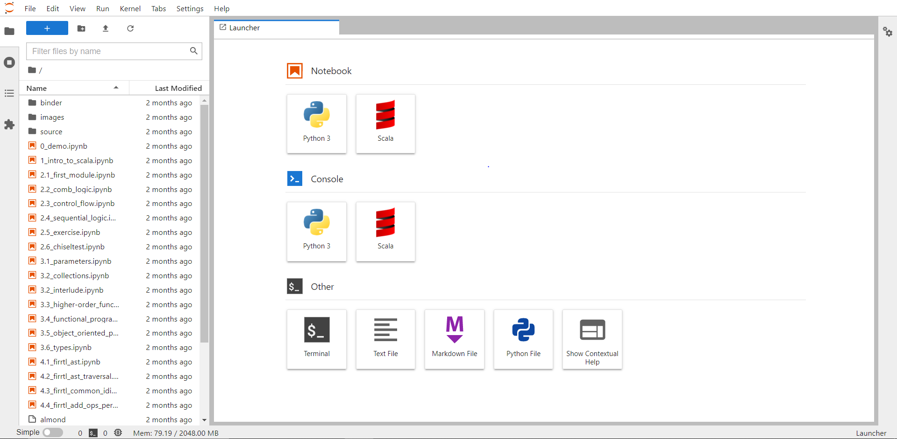

Chisel¶
- Alunes: Victor Laperuta de Moura / Ana Clara Carneiro de Freitas
- Curso: Engenharia da Computação
- Semestre: 10 / 6
- Contato: victorlm2@al.insper.edu.br / anaccf5@al.insper.edu.br
- Ano: 2021
Come√ßando¶
Para seguir esse tutorial é necessário:
- Hardware: DE10-Standard e acessórios
- Softwares: Quartus 18.01, Java
- Documentos:
- DE10-Standard_User_manual.pdf
Motiva√ß√£o¶
Esse tutorial foi realizado com o intuito de aprender e entender um pouco mais sobre uma das mais novas linguagens de design de hardware, Chisel, e apresentar sua infraestrutura, algumas formas de implementá-la e quais são suas possibilidades.
Introdu√ß√£o sobre Chisel¶
Chisel é uma linguagem de design de hardware extremamente nova e que foi desenvolvida como uma alternativa às HDLs (Hardware Description Languages), como por exemplo Verilog e VHDL. O que diferencia a Chisel das mais clássicas é a possibilidade de realizar a programação por meio de uma linguagem mais atualizada, sendo essa o Scala, facilitando o desenvolvimento de circuitos e designs mais complexos.
Além disso, o Chisel se baseia na estrutura de compilador de hardware FIRRTL (Flexible Intermediate Representation for RTL), a qual permite uma compilação de circuitos mais otimizada, em menor tempo e mais otimizada.
Caso deseje saber um pouco mais sobre a linguagem:
Chisel Tutorial (Sem necessidade de instala√ß√£o)¶
 Antes de continuar o tutorial, pode ser interessante executar este notebook para ter uma noção melhor da linguagem scala, caso não esteja familiarizado. Em especial, o arquivo "1_intro_to_scala.ipynb" pode ser bem útil, e os demais vão cobrir pontos que não abordaremos neste projeto, por exemplo como construir seus próprios módulos do zero no Chisel.
Instala√ß√µes¶
Instala√ß√£o no Ubuntu¶
Info
A instalação do Scala e os projetos que usam o SBT assumem que o ambiente já possui um JDK instalado, por isso é preciso realizar a instalação do java.
Info
O Chisel é baseado no Scala para compilar os arquivos dos seus projetos, ou seja, o Scala é uma "Domain Specific Language" - uma linguagem de programação específica para uma determinada aplicação.
Info
O Verilator é utilizado na etapa de compilação do código em Scala para Verilog.
Instala√ß√£o no Windows¶
Info
É necessário baixar o SBT pois essa é a ferramenta que permite a execução e construção de projetos em Scala e Java.
Info
Foi escolhido o Chocolatey como ferramenta para instalar o SBT, mas outras, como o scoop, podem ser utilizadas para instalar o SBT no seu computador. Para instalar a ferramenta utilize o comando abaixo:
choco install sbt
Clonando o reposit√≥rio¶
Clonar o repositório: Chisel Playground.
Ir para a pasta "blinky", que é o projeto que vamos compilar e demonstrar o funcionamento na FPGA:
cd chisel-playground/blinky
Nos arquivos do projeto, ao entrar na pasta src/main/scala, existem dois principais: "Blinky.scala" e "TopLevel.scala".
- O "Blinky.scala" é responsável por criar o módulo que controla 3 LEDs: o primeiro e o segundo piscam alternadamente duas vezes a cada frequência definida, e o terceiro LED realiza um "fade-in", através de um PWM definido no arquivo.
- O "TopLevel.scala" é responsável por mapear os inputs e outputs para o módulo do "Blinky" e converter o clock da FPGA para 25Mhz utilizando o pll selecionado.
Info
O clock utilizado na FPGA foi o de 50Mhz, mas um dos arquivos compilados pelo projeto é responsável por converter a frequência para 25Mhz.
Como o código que vamos compilar precisa de recursos específicos da placa na qual vai ser rodado, é preciso antes procurar pela placa nos arquivos do projeto. Para isso, é possível conferir as placas disponíveis na pasta src/main/resources, onde temos os plls que serão utilizados por cada uma.
Em seguida, podemos compilar o projeto para verilog. Como argumento do comando "make", é possível selecionar a placa em que queremos executar o código. No caso, como estamos usando uma placa DE-10 da Altera, a mais próxima seria a "de1_soc_revF".
make chisel BOARD=de1_soc_revF
O output dos arquivos compilados se encontra na pasta generated. Dos arquivos gerados, vamos precisar de apenas dois para passar para a FPGA via quartus: o "Toplevel.v" e o pll gerado "pll_de1_soc_revF.v". Com ambos os arquivos gerados:
- Abra o quartus e crie um novo projeto.

{kind=link}
{kind=link}
- Importe os dois arquivos e configure o "Toplevel.v" como toplevel do projeto.
{kind=link}
- Mapeie os LEDs e o clock no Pin Planner.
{kind=link}
- Compile e passe para a FPGA.